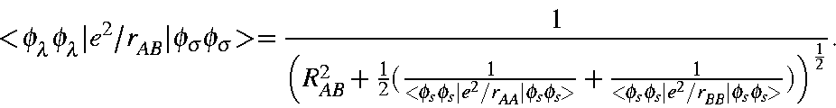
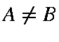

| Bond to | Order | Bond to | Order |
| C2 | 1.017090 | C8 | 0.000009 |
| C3 | 0.015249 | C9 | 0.000001 |
| N4 | 0.004989 | N10 | 0.000000 |
| C5 | 0.001219 | C11 | 0.000000 |
| C6 | 0.000086 | C12 | 0.000000 |
| N7 | 0.000031 |
Bonds are between the terminal nitrogen and the backbone atoms.
GLY-GLY-GLY-GLY has the structure: H2N-CH2-CO-NH-CH2-CO-NH-CH2-CO-NH-CH2-COOH.
The bond-order is a measure of the electron density between two atoms. Table 1 shows the bond-orders between the terminal nitrogen and the backbone atoms in the tetrapeptide GLY-GLY-GLY-GLY. For atoms separated by more than 3 - 4 bonds, that is, by more than 5 - 7 Ångstroms, the bond-orders rapidly become very small. Also, at such distances the overlap of two atomic orbitals becomes extremely small. Since the one-electron interactions depend on the overlap
Hλσ = Sλσ (βλ + βσ)
where Sλσ is the atomic orbital overlap, and βλ and βσ are atomic orbital parameters, it follows that the one-electron interactions at distances greater than about 6-7 Ångstroms will also be vanishingly small.
By calculating and storing only the one-electron integrals representing interactions of less than a given distance, a considerable saving in storage requirements can be achieved.
Unlike the one-electron integrals, the value of some two-electron two-center integrals does not fall off rapidly with increasing distance. The 100 two-electron integrals involving two atoms can be divided into five groups, as shown in Table 2. Some of these integrals, such as the <pp|pp> integrals, can be expressed in terms of two multipoles, here a monopole and a quadrupole; however, for the purpose of this discussion the effect of the lower multipole--the monopole in this case--dominates.
At distances greater than about 5 or 6 Ångstroms, the behavior of these integrals becomes very simple. Of the 100 integrals, 60 represent quadrupoles or higher multipoles and have a negligible value. The 16 monopole terms - representing simple electrostatic repulsion - are all composed of the same monopole term and various quadrupolar components, and can be set equal. The 24 dipole terms can be expressed as a dipole interacting with either a simple monopole (an <ss|sx>, for example), or a monopole plus quadrupole, e.g., <xx|sx>. Since the quadrupolar terms can be ignored, the 24 dipolar terms can be represented by 6 simpler terms, of generic form <sp|ss> and <ss|sp>. Thus, out of the 100 integrals needed at small distances, only 7 are needed at larger distances. At still larger distances, 30 Ångstroms or more, even the dipolar terms become negligible. Therefore, at such large distances only the single monopole term, representing simple electrostatic repulsion, need be used.
Two-electron two-center integrals must therefore be represented in a different way from the one-electron two-center integrals. As with the one-electron integrals, a cutoff distance can be specified. For convenience, the one-electron and two-electron cutoff distances are set equal. As a result, all one- and two-electron integrals which represent interactions between atoms that are separated by less than the cutoff distance would then be treated using standard NDDO approximations. The simplest electrostatic repulsion ( <ss|ss>) between electrons on atoms that are separated by more than the cutoff distance is approximated by the conventional NDDO term

This was chosen in order to minimize the discontinuity at the cutoff distance. Similar NDDO approximations were used for the other dipolar terms.
In recognition of this fact, SCF calculations can be simplified considerably by including only those NDDO terms which apply to atoms separated by less than a preset limit, and including only the electrostatic term for interactions between atoms separated by more than that limit.
The various cutoffs used have specific names and defaults. These are summarized
in Table 3.
By default, the cutoff distances are set sufficiently large that any ΔHf calculated using these values will agree with that obtained by using conventional methods within 0.1 kcal/mol. CUTOF2 can be reduced, under user control, to save computational time and to reduce the memory demand. To avoid serious errors, CUTOF2 should not be set below about 5 Ångstroms.
Once CUTOF2 is set, all one-electron integrals involving atoms separated by less than CUTOF2 can be evaluated. To save space, only those integrals which are evaluated are stored an an array. For the one-electron integral, this array is called H. All integrals relating to any pair of atoms are stored contiguously. Given the starting address of an atom-pair, the sequence in which the integrals occur is determined only by the number of atomic orbitals on each atom. However, the order in which atom pairs are stored is not so simple. The only way to find the starting address of any atom pair is to have that address stored in a new array. This array is called IJBO, and has the following structure:
IJBO is a square array, of size N by N, where N is the number of atoms. The starting address of integral string for atoms A and B is stored in array element IJBO(A,B). If , then the starting address is also stored in IJBO(B,A). All pairs of atoms separated by more than CUTOF2 do not have associated integral strings. To recognize this, the relevant array elements in IJBO are set to '-1', and if the interatomic distance is greater than CUTOF1 then the array element is set to '-2'. Zero cannot be used, because of the way starting addresses are defined.
To reiterate: All integrals involving atoms, A and B, separated by less than CUTOF2 are stored, and the starting address of the integrals is given by IJBO(A,B) and IJBO(B,A). With the exception of some electrostatic terms, no integrals involving atoms separated by more than CUTOF2 are calculated or stored. The relevant array element in IJBO is set to `-1' or '-2'.
To summarize:
There are three regions around each atom. The sizes of these regions are determined by CUTOF2=m.mm (default: m.mm=12) and CUTOF1=n.nn (default n.nn=30). In the first region, 0.0 to m.mmÅngstroms, all NDDO interactions are used. Between m.mm and n.nn Å ngstroms, only monopolar and dipolar electrostatic terms are used, and beyond n.nn Ångstroms, the only term considered is the monopolar electrostatic interaction.